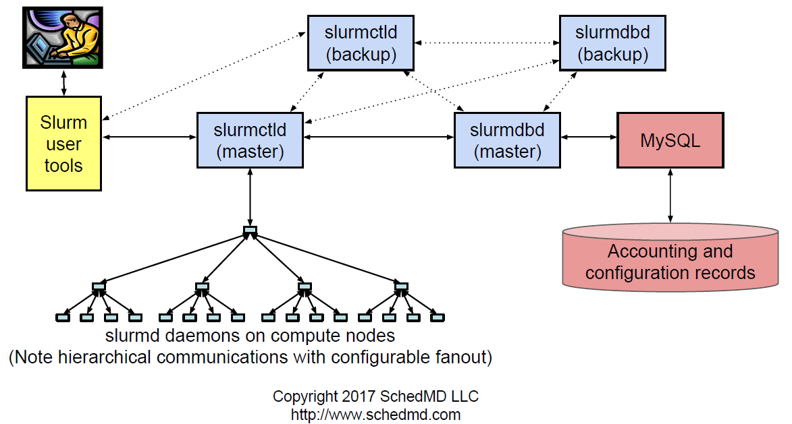

Overview
- Slurm - Simple Linux Utility for Resource Management.
- It is the job scheduler and resource manager which optimize the situations when there is more works than resources, set up the environment for parallel and distributed computing.
- Development started in 2002 at Lawrence Livermore National.
- Runs 60% of TOP500 systems.
Architecture
- Central controller daemon - slurmctld - it runs only in the "Controller Node" and is responsible for allocating resource to different jobs and also scheduling them.
- Database daemon - slurmdbd - it runs on the compute nodes and waits to execute work issued by slurmctld.
- Compute node daemon - slurmd - is the Slurm database and runs only on a single node. It is responsible for account recording information for the multiple Slurm-managed clusters in single database.

For full documentation visit slurm workload manager.
HPC Slurm Cluster
TBD